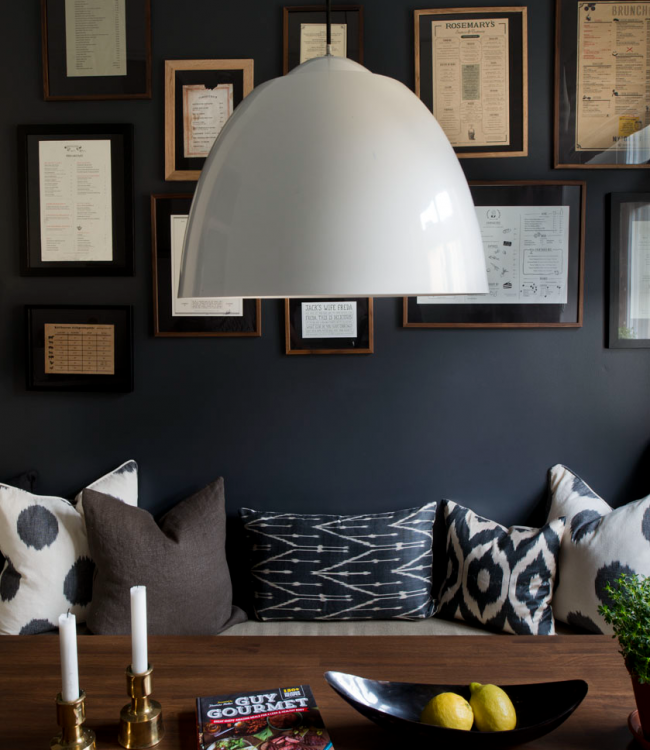

Portfolio Vasastan Two-Bedroom

Vasastan Two-Bedroom
For this busy professional, I wanted to create both a place of rest between business travel and a casual and inviting place to entertain friends on weekends. Perfectly located on a quiet but central street in Stockholm, this 2 bedroom apartment was completely renovated.
To seat as many as possible in the smallish kitchen, we added a built in seat to sit 3 comfortably on one side as well as vintage chairs on the other for more guests. Two separate closets were joined to make one larger walk in closet in conjunction to the master bedroom. With family out of town it was also important to have a guest bedroom which could double as a larger dining room and library.
To create a more open feeling, the wall was opened up to fit a pair of double doors, painted a dark grey color, to add a sense of connection between the two rooms.